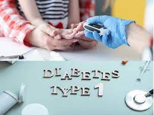

Type 2 diabetes



Insulin is a hormone that helps your body turn food into energy and control blood sugar levels. People with diabetes may need insulin because their bodies can't make enough insulin or can't use it properly. Insulin helps manage blood sugar levels and prevents serious health problems.
Insulin is essential for survival in people with type 1 diabetes and some people with type 2 diabetes. People with type 2 diabetes may need insulin if their blood sugar levels are not well managed with oral medication.
Push the plunger relatively slowly to inject the dose. After the dose has been injected, hold the needle in for a good 10 seconds to help insulin get delivered and prevent any of the dose escaping out. Ensure that the used needle bin is deposited into a sharps bin.
Generally, to correct a high blood sugar, one unit of insulin is needed to drop the blood glucose by 50 mg/dl. This drop in blood sugar can range from 30-100 mg/dl or more, depending on individual insulin sensitivities, and other circumstances.
Hypoglycemia can happen when your blood sugar drops below 4mmol/L. It needs to be treated quickly. You can test yourself for hypoglycemia at home. You can check to see if your diabetes medication raises your risk of hypoglycemia or to see if the symptoms you are experiencing are due to low blood sugar.